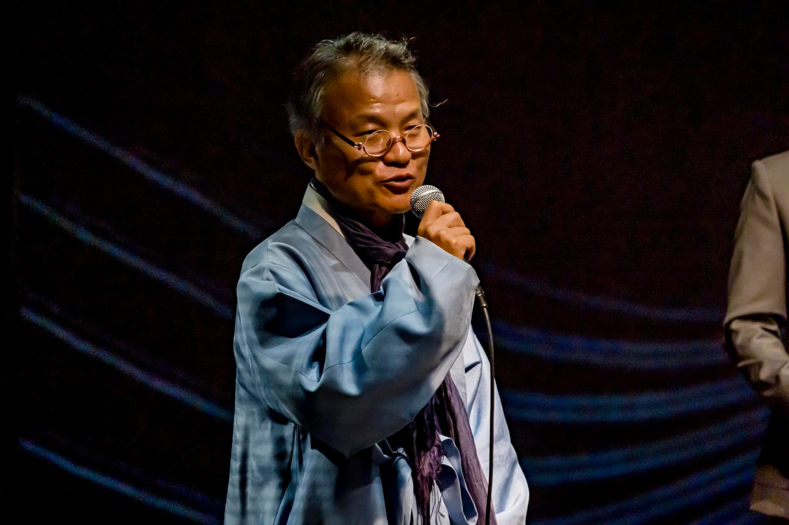
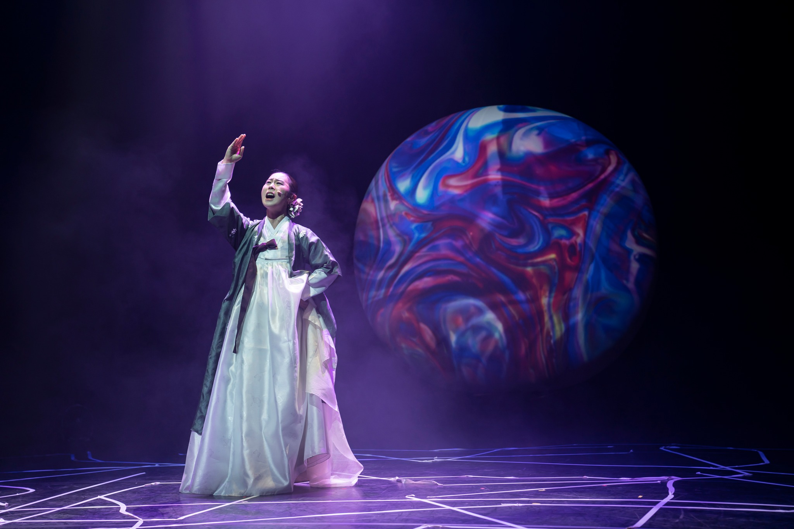
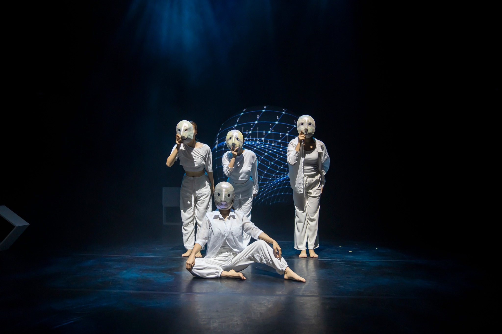
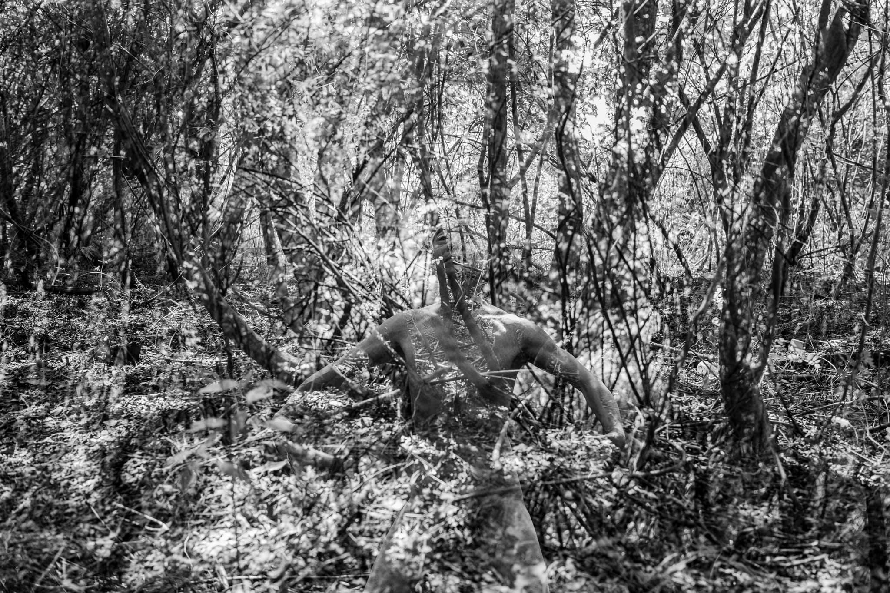
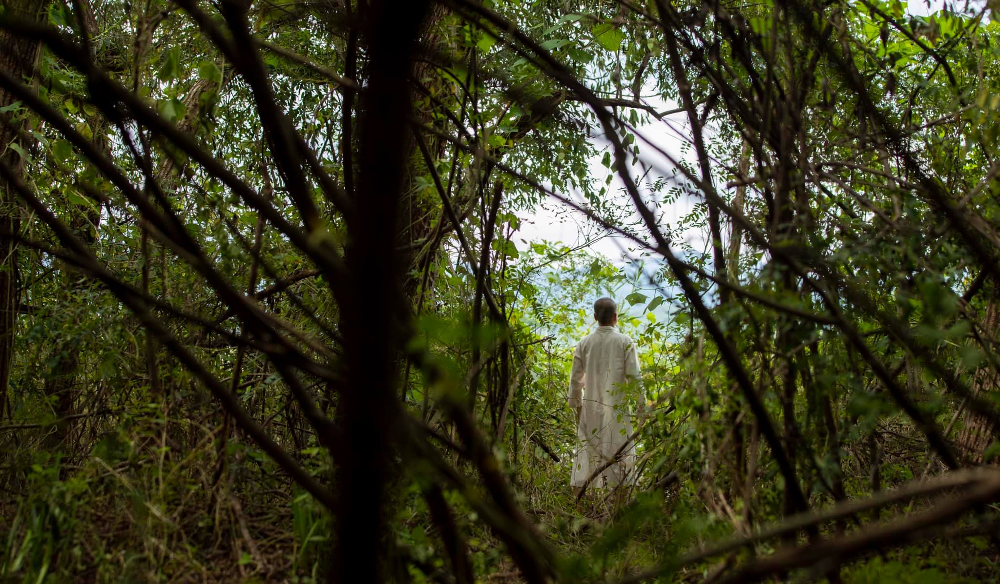

전통의 음색과 전자음향을 연결해 공간의 시간과 정서를 구축합니다.
MEMORY · CULTURE · CONTEMPORARY ART
한국 문화의 기억에서 출발해,무대와 영상 사이에 새로운 감각의 장면을 설계합니다.

WOOSOOZOO는 637년에 기록된 춘천의 옛 지명 ‘우수주’에서 출발한 ARA KOREA의 장기 프로젝트입니다. 2018년 첫 무대 이후, 이름이 품은 음성적 질감과 지역의 기억을 음악·무용·영상의 교차점에서 탐구해 왔습니다.
소리와 움직임, 이미지가 서로를 연결하며하나의 시공간을 구성합니다.

전통의 음색과 전자음향을 연결해 공간의 시간과 정서를 구축합니다.

신체의 흐름을 통해 상징과 서사가 살아 있는 장면으로 전환됩니다.

빛과 영상, 오브제가 무대의 감각을 확장하며 새로운 시각적 기억을 남깁니다.

FROM 2018 TO THE PRESENT
한국 문화의 상징과 서사는 공연, 예술영화, 미디어아트로 이어집니다. 축적된 장면은 다음 창작을 위한 자원이 되어 새로운 해석과 국제적 교류를 연결합니다.
View the archive